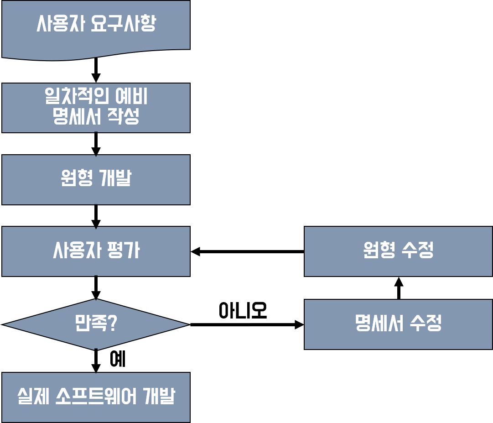

|
[1. MIS] -경영정보학 / 경영정보시스템 -Management of Information Systems -Managing Information Systems -정보시스템 관리(경영) -정보시스템을 포함한 모든 정보자원에 대한 관리 -정보자원이란 정보와 관련한 모든 자원으로 정보인력, 정보시스템, 정보인프라를 포함한다. [2. Management] -경영 : plan-do-see. 특정 목표를 이루기 위해 사람들이 힘을 모으는 일 -통제 : 진행사항과 계획을 비교하여 피드백을 기반으로 수정한다. [3. IT. Information Technology] -IT = 3C = Computer, Communication, Contents -IT 체계 구성요소 1) 컴퓨팅 : 컴퓨터 하드웨어 및 시스템 소프트웨어 2) 통신 : 통시 네트워크 및 접속 메커니즘 3) 데이터 : 조직의 정보자산, 정보의 접근, 사용 통제, 저장방법 등 4) 응용시스템 : 조직의 응용시스템, 기능 및 상호관계, 개발 방법론 등 [4. 정보시스템 개발 절차] A. 생명주기 접근법(폭포수 모형) 1) 개발 (분석->설계->개발->시험)-> 운영 (이행->유지보수) 2) 순차적인 단계, 여러단계로 명확하게 구분 3) 장점 : 당사자의 검토 가능한 중간 산출물 제공 4) 단점 : 명세서 작성 시간 소요. 피드백 적음. 재사용성 낮음. 5) 개발하고자 하는 정보시스템의 기능이 명확하고 이해하기가 쉬운 경우 사용 B. 원형개발 접근법(프로토타입) 1) 개발하고자 하는 정보시스템에 대한 일종의 견본인 프로토타입을 제공하여 사용자와 개발자 간의 의사소통에 도움을 주는 방식 2) 장점 : 피드백 기간 단축, 요구사항 잘 반영. 개발 과정에 사용자 참여 높음. 3) 단점 : 원형 개발 시간과 비용이 추가됨 4) 개발하고자 하는 정보시스템이 사용자-시스템 간의 복잡한 상호작용이 요구되거나 업무 처리절차, 출력 및 통제 기법 등이 불확실한 경우  [5. 프로젝트] 1) 일시적이다. cf) 반복적으로, 또는 매일하는 일은 operation이라 한다. 2) 고유한 목적이 있다. 3) 점진적으로 정교해지고, 불확실성을 띈다. 4) 제약요인이자 목표에는 범위, 시간, 비용이 있다. 5)프로젝트 관리 필수 산출물 a. 범위 관리 : 요구사항 분석서, WBS (1) 요구사항분석서 : 콘텐츠, 기술, 디자인 (2) WBS : 반드시 이에 따른 산출물이 있어야 한다. b. 일정 관리 : 간트 차트 c. 의사소통 관리 : progress, final report |